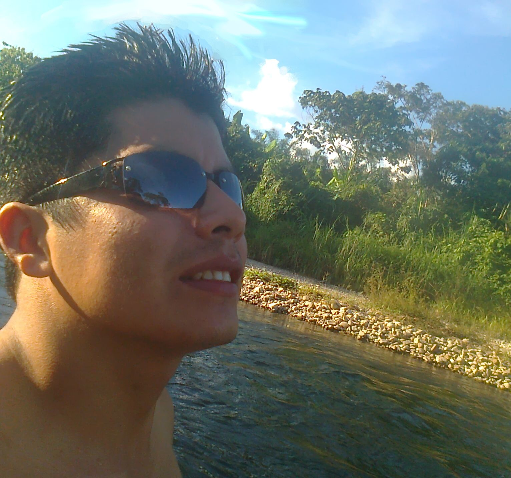

Nacido en la ciudad de Uchiza, jurisdicción de la provincia de Tocache, región San Martin. Ciudad ubicada en el nor-oriente peruano, en el valle del Alto Huallaga.
Disfruto de ver fútbol y películas, hincha de la selección peruana.
A partir de Agosto 2010 hasta la actualidad me desempeño como Asistente de Sectores en la empresa Palmas del Espino S.A., realizando labores de procesamiento de información, actualización de planos de parcelas agrícolas georreferenciadas, reportes y análisis de indicadores de producción, mano de obra y costos.
Entre los idiomas que hablo: